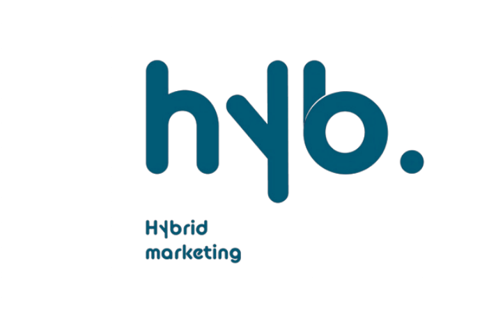
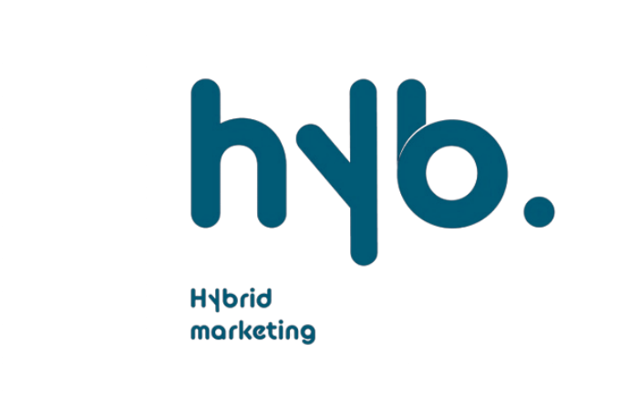
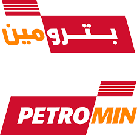
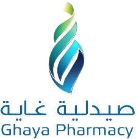
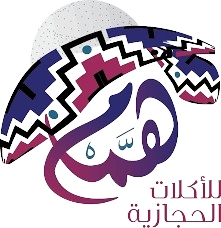
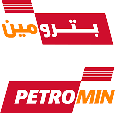
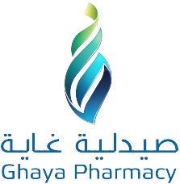
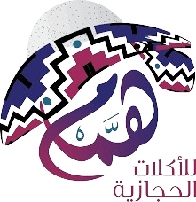

عن جيرة
جيرة هو تطبيق اجتماعي يهدف إلى إعادة إحياء الأحياء وتعزيز الروابط المجتمعية من خلال مبادرات وبرامج مختلفة، بما في ذلك تطوير الأسواق المحلية وخلق بيئة تجارية نشطة.

برنامج يهدف إلى تحفيز الجيران على التسوق من متاجر حي النهضة مقابل الحصول على نقاط ولاء.
آلية تعاون تضمن للمتاجر الصغيرة الترويج لمنتجاتها بأقل مستوى خطورة وبدون رسوم مقدمة.
جيرة تعمل على تطوير الأسواق المحلية وتعزيز الحركة التجارية داخل الأحياء.
 

 





جيرة هو تطبيق اجتماعي يهدف إلى إعادة إحياء الأحياء وتعزيز الروابط المجتمعية من خلال مبادرات وبرامج مختلفة، بما في ذلك تطوير الأسواق المحلية وخلق بيئة تجارية نشطة.

تطبيق "جيرة" يستخدم تقنيات حديثة لتعزيز التواصل المجتمعي وتمكين المبادرات المحلية. يقدم جيرة منصة تفاعلية تسمح للجيران بالمشاركة في مبادرات تحسين الحي، دعم التجارة المحلية، وتبادل الخدمات والموارد بكل سهولة ويسر، مع تطبيق مبادئ الاقتصاد التشاركي لتقوية الروابط المجتمعية.

"من خلال جيرة، أصبح التواصل مع جيراني والمشاركة في الأنشطة المحلية أمرًا ممتعًا وسهلاً. أشعر بانتماء أقوى لمجتمعي الآن!"
"جيرة لم يساعدني فقط على معرفة المزيد عن الفعاليات في حيي، بل ساعدني أيضًا على إطلاق مبادرة خاصة بي لمساعدة الأطفال على التعلم!"
"أحب كيف يجعل جيرة التسوق من الأعمال المحلية تجربة مكافئة. أنا الآن أتسوق دائمًا من السوق المحلي وأكسب نقاط ولاء!"
كن جزءًا من مجتمعنا المتنامي وساهم في تعزيز التواصل والمشاركة المجتمعية في حيك.
سجل الآن